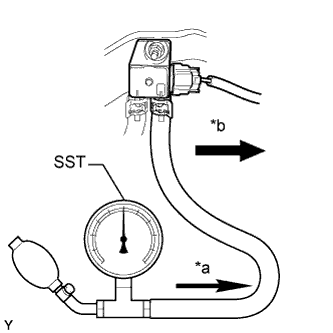

ДИФФЕРЕНЦИАЛЬНЫЙ ДАТЧИК ДАВЛЕНИЯ > ПРОВЕРКА БЕЗ СНЯТИЯ С АВТОМОБИЛЯ |
| 1. ПРОВЕРЬТЕ ДИФФЕРЕНЦИАЛЬНЫЙ ДАТЧИК ДАВЛЕНИЯ В СБОРЕ |
Подсоедините портативный диагностический прибор к DLC3.
Установите замок зажигания в положение ON (ВКЛ).
Включите портативный диагностический прибор.
Войдите в следующие меню: Powertrain / Engine / Data List / DPNR Differential Pressure.
Отсоедините воздушный шланг выпускной трубы № 6 от датчика.
|  |
С помощью SST подайте давление на дифференциальный датчик давления.
| *a | Давление |
| *b | Передняя сторона автомобиля |
Проверьте величину давления на датчике.
Подсоедините воздушный шланг выпускной трубы № 6 к дифференциальному датчику давления.